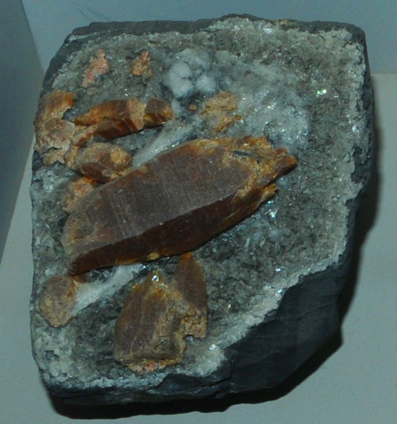
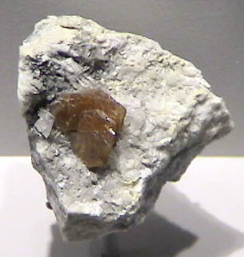
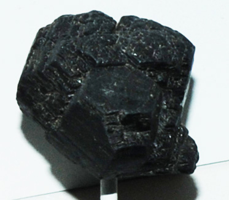

Parisite
| 
|
Parisite is a mineral which contains lanthanum and cerium as well as calcium and flourine. It has the general composition Ca(Ce,La)2Ca(CO3)3F2. The origin of this sample is Muzo, Colombia. The sample measures about 7 cm across. The sample is on display in the Smithsonian Museum of Natural History.
|
Mindat: Parisite
Bastnaesite
Another mineral containing lanthanum and cerium is bastnaesite, (Ce,La)CO3. This sample is from Trimouns talc mine, Luzenac, Ariege, France. Its size is about 3.5x3.5 cm. It is also spelled Bastnasite in some sources.
Mindat: Bastnaesite
|

|
Hibonite
| 
|
Hibonite is a mineral which contains cerium as well as calcium and other metals. It has the general composition (Ca,Ce)(Al, Ti,Mg)12O19 . The origin of this sample is Eshiva, Madagascar. The sample measures about 2.5x2.5 cm.
Mindat: Hibonite
|
|
Index |